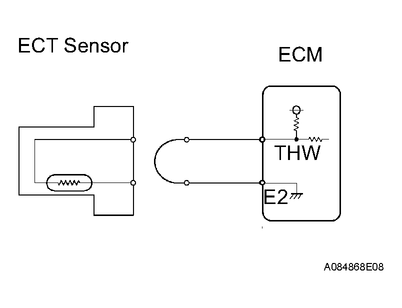
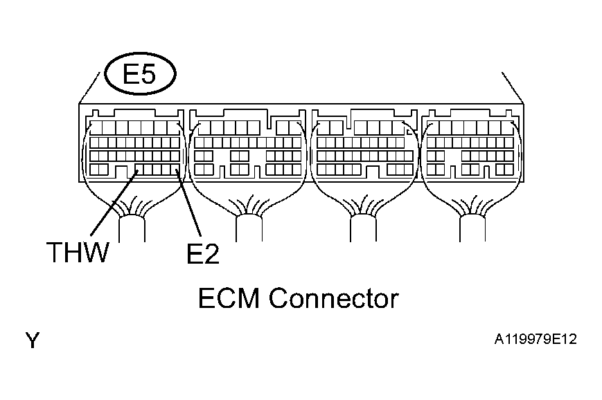
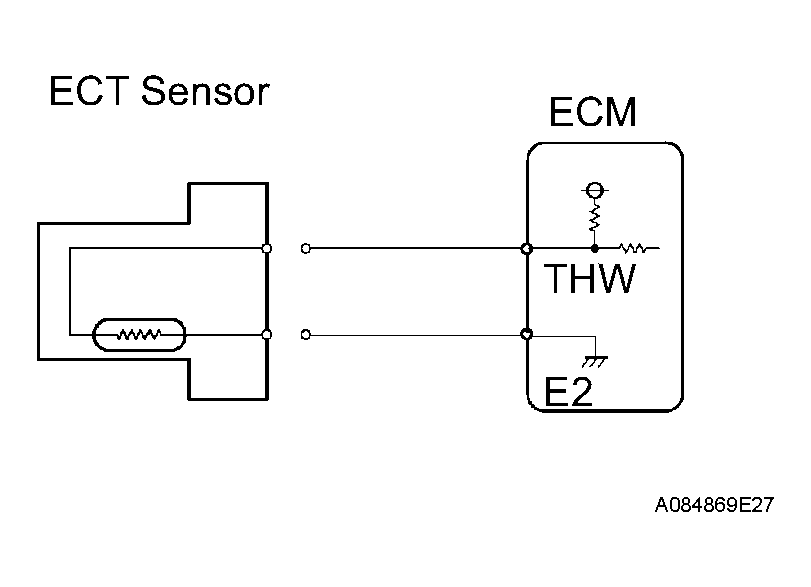
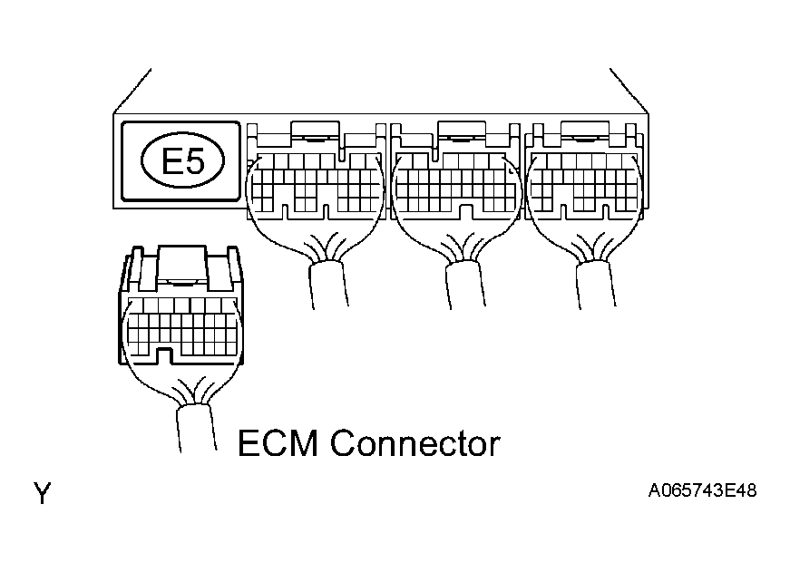

Inspection Procedure
HINT:
- If other DTCs relating to different systems that have terminal E2 as the ground terminal are output simultaneously, terminal E2 may have an open circuit.
- Read freeze frame data using the intelligent tester. Freeze frame data records the engine conditions when malfunctions are detected. When troubleshooting, freeze frame data can help determine if the vehicle was moving or stationary, if the engine was warmed up or not, if the air-fuel ratio was lean or rich, and other data from the time the malfunction occurred.
- READ VALUE OF INTELLIGENT TESTER (ENGINE COOLANT TEMPERATURE)
- Connect the intelligent tester to the DLC3.
- Turn the ignition switch ON and turn the tester ON.
- Enter the following menus: DIAGNOSIS / ENHANCED OBD II / DATA LIST / PRIMARY / COOLANT TEMP.
- Read the value displayed on the tester.
Standard: Between 80°C and 97°C (176°F and 207°F) with warm engine.
Result
RESULTTemperature Displayed Proceed to -40°C (-40°F) A 140°C (284°F) or higher B Between 80°C and 97°C (176°F and 207°F) C HINT:
- If there is an open circuit, the intelligent tester indicates - 40°C (-40°F).
- If there is a short circuit, the intelligent tester indicates 140°C (284°F) or higher.
B: Go to step 4
C: CHECK FOR INTERMITTENT PROBLEMS
A: Go to Next Step
- READ VALUE OF INTELLIGENT TESTER (CHECK FOR OPEN IN WIRE HARNESS)
- Disconnect the E2 Engine Coolant Temperature (ECT) sensor connector.
- Connect terminals 1 and 2 of the ECT sensor connector on the wire harness side.
- Connect the intelligent tester to the DLC3.
- Turn the ignition switch ON and turn the tester ON.
- Enter the following menus: DIAGNOSIS / ENHANCED OBD II / DATA LIST / PRIMARY / COOLANT TEMP.
- Read the value displayed on the tester.

Courtesy of © TOYOTA, LICENSE AGREEMENT TMS1002Standard: 140°C (284°F) or higher.
OK: CONFIRM GOOD CONNECTION TO SENSOR. IF OK, REPLACE ENGINE COOLANT TEMPERATURE SENSOR
NG: Go to Next Step
- READ VALUE OF INTELLIGENT TESTER (CHECK FOR OPEN IN ECM)
- Disconnect the E2 ECT sensor connector.
- Connect terminals THW and E2 of the ECM connector.
HINT:
Before checking, perform visual and contact pressure checks on the ECM connector.
- Connect the intelligent tester to the DLC3.
- Turn the ignition switch ON and turn the tester ON.
- Enter the following menus: DIAGNOSIS / ENHANCED OBD II / DATA LIST / PRIMARY / COOLANT TEMP.
- Read the value displayed on the tester.

Courtesy of © TOYOTA, LICENSE AGREEMENT TMS1002Standard: 140°C (284°F) or higher.
OK: REPAIR OR REPLACE HARNESS OR CONNECTOR
NG: CONFIRM GOOD CONNECTION TO ECM. IF OK, REPLACE ECM
- READ VALUE OF INTELLIGENT TESTER (CHECK FOR SHORT IN WIRE HARNESS)
- Disconnect the E2 ECT sensor connector.
- Connect the intelligent tester to the DLC3.
- Turn the ignition switch ON and turn the tester ON.
- Enter the following menus: DIAGNOSIS / ENHANCED OBD II / DATA LIST / PRIMARY / COOLANT TEMP.
- Read the value displayed on the tester.

Courtesy of © TOYOTA, LICENSE AGREEMENT TMS1002Standard: -40°C (-40°F)
OK: REPLACE ENGINE COOLANT TEMPERATURE SENSOR
NG: Go to Next Step
- READ VALUE OF INTELLIGENT TESTER (CHECK FOR SHORT IN ECM)
- Disconnect the E5 ECM connector.
- Connect the intelligent tester to the DLC3.
- Turn the ignition switch ON and turn the tester ON.
- Enter the following menus: DIAGNOSIS / ENHANCED OBD II / DATA LIST / PRIMARY / INTAKE AIR.
- Read the value displayed on the tester.

Courtesy of © TOYOTA, LICENSE AGREEMENT TMS1002Standard: -40°C (-40°F)
OK: REPAIR OR REPLACE HARNESS OR CONNECTOR
NG: REPLACE ECM